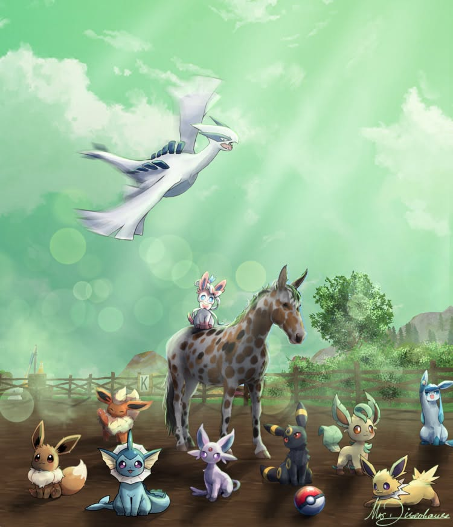

Gemeinsam leveln
Wir ziehen durch Jorvik, erledigen Quests und helfen uns gegenseitig beim Leveln – ganz entspannt und ohne Zeitdruck.
Ein Ort zum Abschalten, Lachen und Zusammensein. Bei den Dizzy Hunters stehen nicht Leistung oder Verpflichtungen im Mittelpunkt – sondern die Menschen, mit denen wir unsere Zeit verbringen.
Entdecke unser Clubleben ↓
Nach einem langen, anstrengenden Tag möchten wir einfach mal durchatmen. Genau dafür gibt es die Dizzy Hunters: einen gemütlichen Treffpunkt, an dem wir gemeinsam spielen, uns austauschen und den Alltag für eine Weile vergessen können.
Bei uns ist alles freiwillig. Du entscheidest selbst, wann du dabei sein möchtest und worauf du Lust hast. Es gibt keine Dressur, keinen Leistungsdruck und keine Anwesenheitspflicht. Wir sind ein Freizeitclub – und das soll sich auch so anfühlen.
Mal sind wir in Jorvik unterwegs, mal in ganz anderen Welten. Hauptsache, wir haben zusammen eine gute Zeit.
Wir ziehen durch Jorvik, erledigen Quests und helfen uns gegenseitig beim Leveln – ganz entspannt und ohne Zeitdruck.
Ob lustige Minispiele, spontane Aktionen oder einfach ein Ausritt: Unsere Treffen sind so abwechslungsreich wie wir selbst.
Unsere Freundschaften hören nicht bei Star Stable auf. Wir spielen zum Beispiel auch Valorant oder entdecken gemeinsam neue Games.
Manchmal brauchen wir gar kein Spiel. Gemeinsam reden, lachen und den Tag ausklingen lassen ist genauso wertvoll.
Ob du jedes Mal vorbeischaust, nur gelegentlich mitspielst oder gerade eine Pause brauchst: Bei uns musst du dich nicht rechtfertigen. Das echte Leben geht immer vor. Wir möchten, dass du dich auf unsere gemeinsame Zeit freust – nicht, dass sie sich wie ein weiterer Termin auf deiner To-do-Liste anfühlt.
Werde Teil der Dizzys →